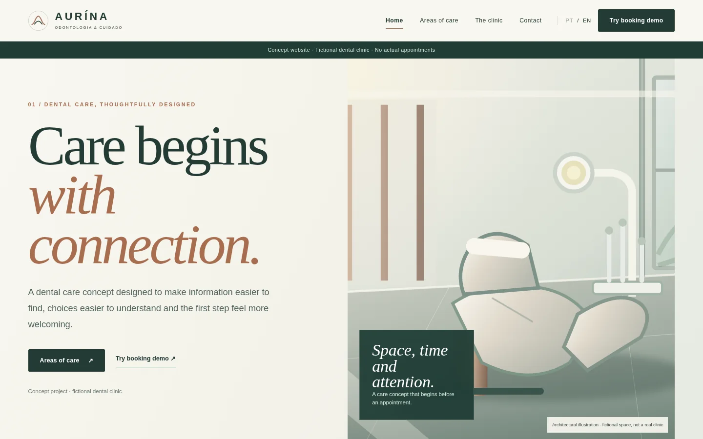

A reassuring tone
Copy explains options and limitations instead of promising a transformation.
Case study / 02 — 04
Dental care · Institutional experience
Care explained with calm and clarity.
A conceptual dental clinic website built around patient-friendly information and a demonstrative booking journey.

Someone seeking dental care needs to understand treatment areas, know what to expect and find an easy next step. This concept organises information without promising outcomes or turning healthcare decisions into an impulse purchase.
People looking for general information about dental care and how a professional assessment works.
Identity, seven treatment areas, educational pages and a demonstration booking flow.
Brand Design / Web Design / UX
The visual identity avoids expected dental clichés. Soft architectural forms, mineral green and copper bring warmth without losing precision. Clear hierarchy and measured spacing make complex topics easier to read.
Mineral green anchors the identity; copper introduces warmth; light surfaces keep the content readable.
 01 — Visual direction
01 — Visual directionCopy explains options and limitations instead of promising a transformation.
Every treatment area has a dedicated page with guidance and common questions.
Visitors can review their selections before completing the demo.
Explore the approach and treatment areas.
Read general guidance and FAQs.
Select a treatment area, conceptual profile, date and time.
Check details and complete a simulation.
The journey connects an institutional homepage, educational pages and progressive appointment steps without asking for sensitive health information.

A conceptual dental clinic website built around patient-friendly information and a demonstrative booking journey.
Explore the experienceGeneral explanations and FAQs organised by topic.
Dates and times can be explored in the demo.
Clear stages and validation precede the demonstration confirmation.
No invented professional credentials or guaranteed results.
AURÍNA demonstrates how an institutional site can combine educational content with an approachable request flow. The clinic, staff and calendar are conceptual; no real appointment is booked.
About the imagery. Architectural illustrations show conceptual environments, not real clinic facilities.
Next project / 03 — 04
ORÍVIA